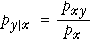

Conditional proportions
Consider hair colour (Y ) and eye colour (X ) in a group of teenagers. The proportion of teenagers who are blonde, conditional on blue eyes, is the proportion of blondes within the sub-population with blue eyes. The conditional proportion is most easily understood as the ratio of the numbers with (a) blue eyes and (b) both blonde hair and blue eyes.

However we can equivalently write the conditional proportion as the ratio of a joint and marginal proportion:

The general definition of the conditional proportions for Y given that the value of X is x therefore
|  |
Conditional probabilities for Y, given X = x
The same definition gives conditional probabilities for Y given that the value of X is x . They can be found by rescaling of that row of the table of joint probabilities (dividing by px) so that the row sums to 1.0.

Two sets of conditional probabilities
Conditional probabilities for X given that Y has the value y are defined in a similar way:

You should be careful to distinguish between px | y and py | x.
The probability of being pregnant, given that a randomly selected person is female would be fairly small. The probability of being female, given that a person is pregnant is 1.0 !!